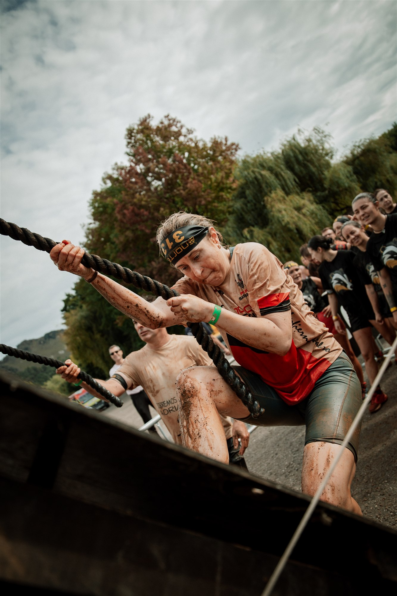
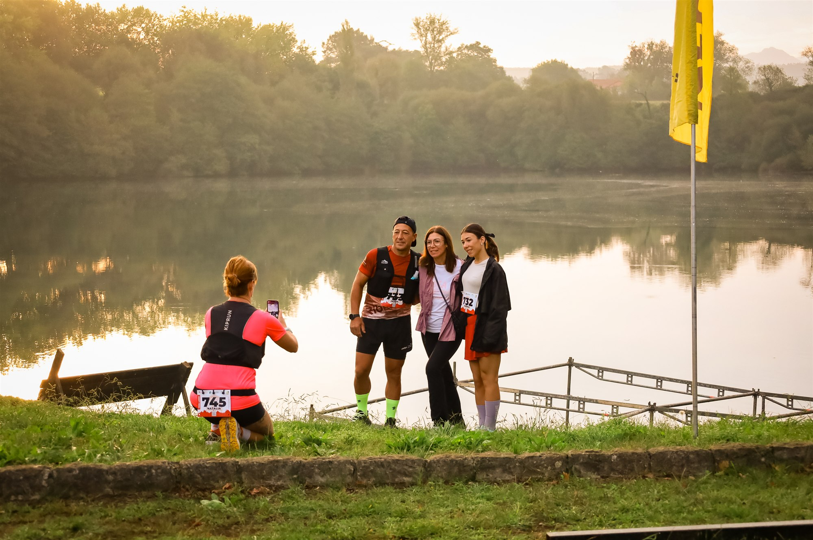

The Cantabrian Race Cabárceno programme brought trail running and obstacle racing to the Parque de la Naturaleza de Cabárceno on 3 and 4 October, with the Lago del Acebo serving as the start-and-finish area.
Saturday's trail programme offered 16 km and 10 km routes. On Sunday, the focus moved to obstacle racing, with a 10 km Classic OCR, a 5 km Fun Race, a 3 km Family Race and a 1 km Kids Race.

Two days, six formats
The event joined endurance racing with a distinctive natural setting. Trail runners moved through the park and the surrounding Cantabrian landscape before the obstacle course tested grip, balance, strength and teamwork.
The range of distances opened the weekend to experienced competitors, recreational racers and families, while the obstacle sections produced the mud, effort and shared celebrations captured by Image Media's photographers.

Image Media coverage
Pedro Oliveira, Rodrigo Vieira, Liane Ferreira and Giorgia Donato covered the event for Image Media, following the action from the lakeside gathering point to the trail and obstacle sections.
The Cantabrian Race Cabárceno programme was organised by Nortea Eventos. Official timing listings recorded the trail races on 3 October and the OCR competition on 4 October.
View the Cabárceno Race photo gallery →
Image Media coverage
Reporting: IM News Editorial Desk
Coverage photographers: Pedro Oliveira, Rodrigo Vieira, Liane Ferreira and Giorgia Donato / Image Media
Event dates, venue, formats and organiser checked against official Nortea Eventos and timing sources.